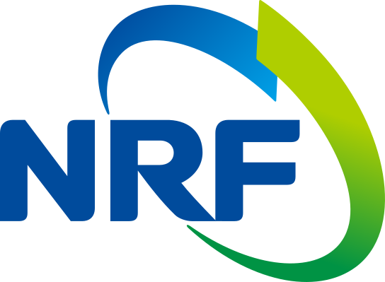

AI Researcher · Ph.D. Student
Jeonghwan Kim
MMLab, Nanyang Technological University
I'm a Ph.D. student at MMLab, Nanyang Technological University (NTU), advised by Prof. Xingang Pan. I completed my M.S. in Artificial Intelligence at Konkuk University, where I was advised by Prof. Wonjun Kim. Throughout my research journey, I have primarily focused on 3D Vision and related areas in computer vision.
News
- Selected as a Finalist for the 2026 Meshy Fellowship Program.
- FastMesh has been accepted to 3DV 2026.
- One paper has been accepted to Multimedia Systems.
- One paper has been accepted to CVPR 2023.
- One paper has been accepted to J. Vis. Commun. Image Represent.
Publications
Google Scholar-
arXiv 2026
Don't Ask Agents to Do Everything: Selective Agentic Reasoning for Single Image to 3D Scene Generation
arXiv preprint, 2026
TL;DR A multi-agent orchestration framework that decomposes single-image 3D scene generation into three structured stages — scene initialization, environment construction, and planner-guided multi-agent refinement — with a geometry-aware layout predictor trained from sparse point-map priors, improving geometric accuracy and perceptual realism.
-
3DV 2026
FastMesh: Efficient Artistic Mesh Generation via Component Decoupling
International Conference on 3D Vision (3DV), 2026
TL;DR An efficient mesh generation framework that handles vertices and faces separately. Vertices are generated autoregressively, while a bidirectional transformer predicts mesh faces from vertex relationships. This reduces token redundancy to ~23% of prior methods and achieves over 8× faster mesh generation with improved quality.
-
CVPR 2023
Sampling is Matter: Point-guided 3D Human Mesh Reconstruction
IEEE/CVF Conference on Computer Vision and Pattern Recognition (CVPR), 2023
TL;DR A method for 3D human mesh reconstruction from a single RGB image that samples image features at projected vertex locations to better link 2D features with 3D representation points. Combined with progressive attention masking to model local vertex interactions under occlusion, it improves reconstruction accuracy on benchmark datasets.
-
Multimedia Systems 2024
Learning Scale-aware Relationships via Laplacian Decomposition-based Transformer for 3D Human Pose Estimation
Multimedia Systems, vol. 30, Jan. 2024
TL;DR A parameter-free 3D human pose estimation method that integrates a Laplacian pyramid with a transformer to capture multi-scale body-part relationships. It also applies body-part–wise self-attention to model local interactions, improving pose estimation performance on benchmark datasets.
-
JVCI 2023
Part-attentive Kinematic Chain-based Regressor for 3D Human Modeling
Journal of Visual Communication and Image Representation, vol. 95, Sep. 2023
TL;DR A parametric human modeling method from a single image that applies body-part attention around body centers and estimates pose and shape through a kinematic chain–based decoder. This improves robustness to severe occlusions and produces more natural human shapes and poses.
* Equal contribution
Research Experience
-
Spocklabs Co., Ltd.
Research EngineerResearch on Video Frame Interpolation and Video Super Resolution
-
Electronics and Telecommunications Research Institute (ETRI)
A Study on 3D Information Acquisition Technology for Producing Volumetric Images
-

National Research Foundation of Korea (NRF)
High-Performance Method for Image Enhancement via Deep Neural Network on Mobile Devices
-
Korea Institute of Science and Technology Information (KISTI)
Development of Deep Learning-Based Image Restoration Technology
-
N Tech Service Co., Ltd.
InternTrained in Java Spring-based web development techniques and learned how to write collaborative and comprehensible code
Academic Service
- Conference Reviewer
- Journal Reviewer
-
- Signal, Image and Video Processing
- ACM Transactions on Multimedia Computing, Communications, and Applications
- The Journal of Supercomputing
- IEEE Transactions on Information Forensics and Security